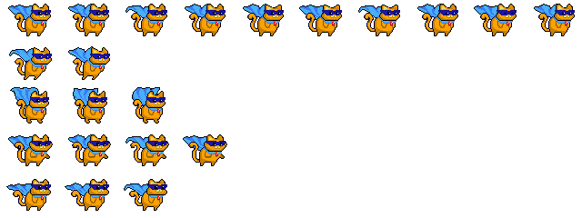
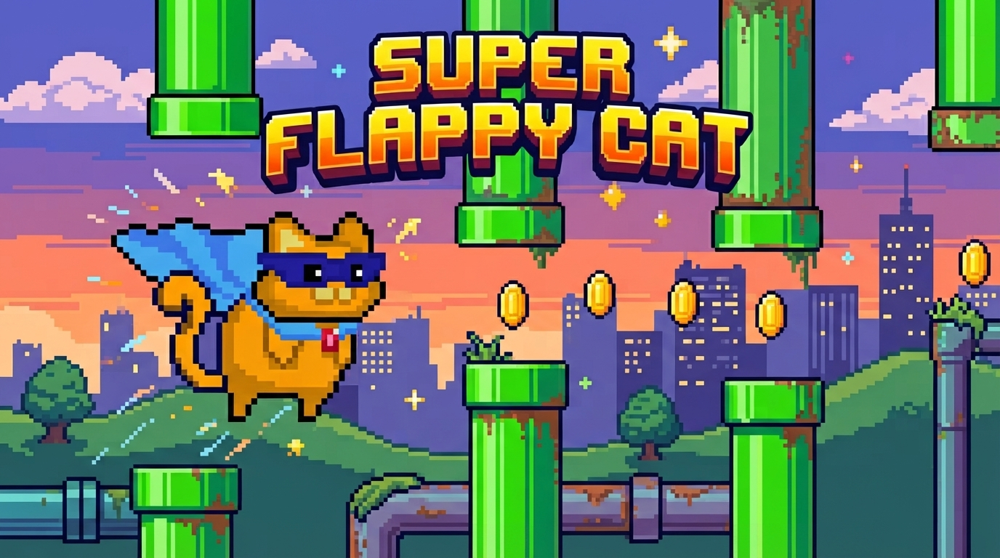

Puntaje: 0
Vidas: 3
Tiempo: 1:30
Cargando spritesheets…

Super Flappy Cat
Un juego de desplazamiento horizontal en el que el personaje avanza por el escenario y debe superar los obstáculos con impulsos hacia arriba.
El bosque tiene seis capas con distintas velocidades. Esquivá al enemigo, juntá monedas para sumar puntos y corazones poco frecuentes para recuperar vidas. Los golpes restan vidas sin detener la partida. Tenés 90 segundos para sobrevivir y sumar puntos.
Comentarios
Pepito123 Hace 8 horas
Muy bueno el juego y sobre todo complicado.